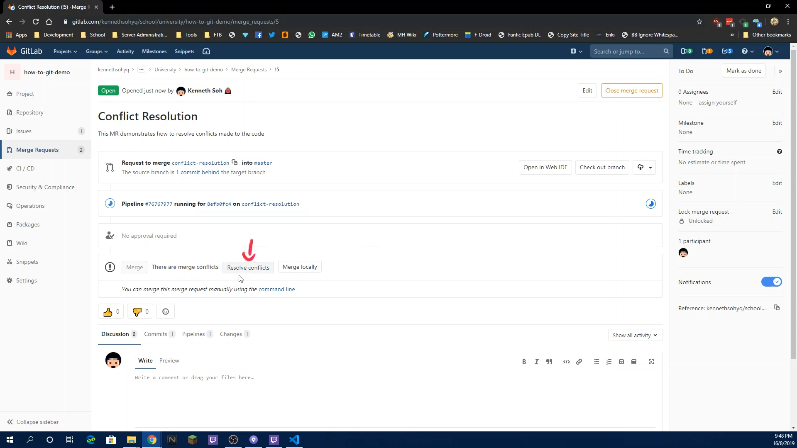
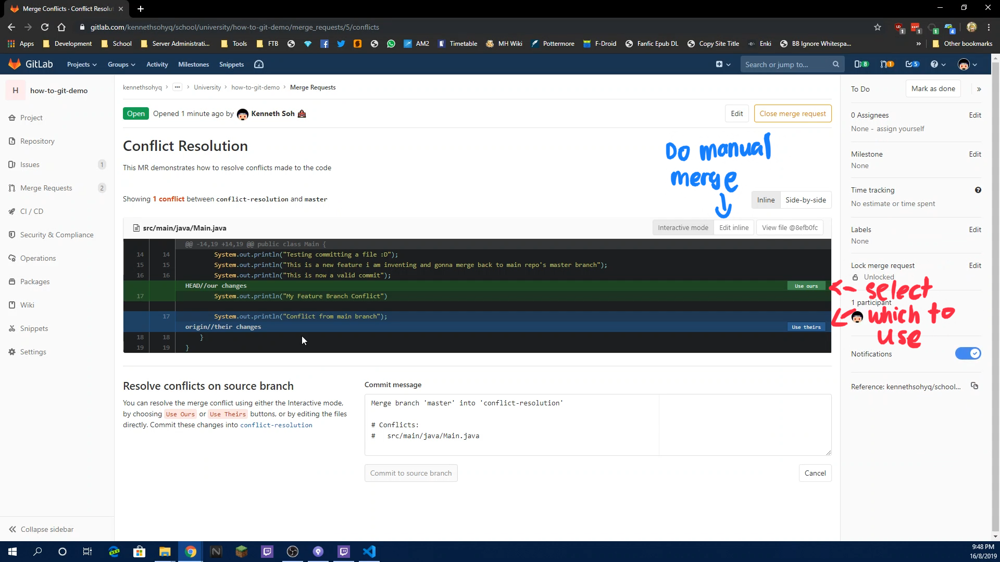
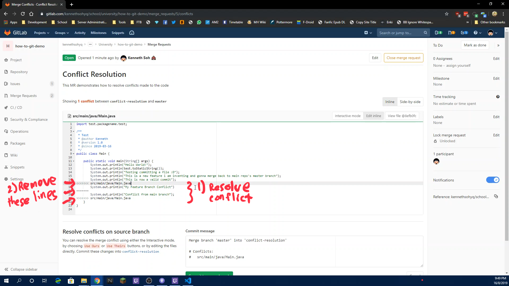
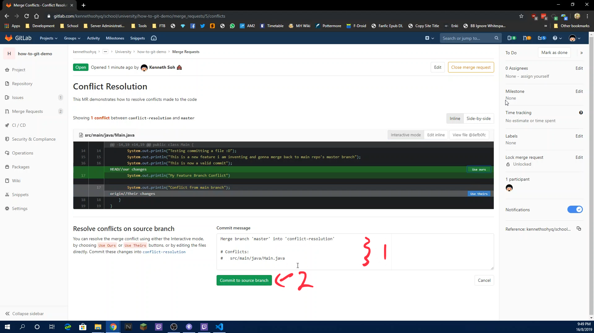
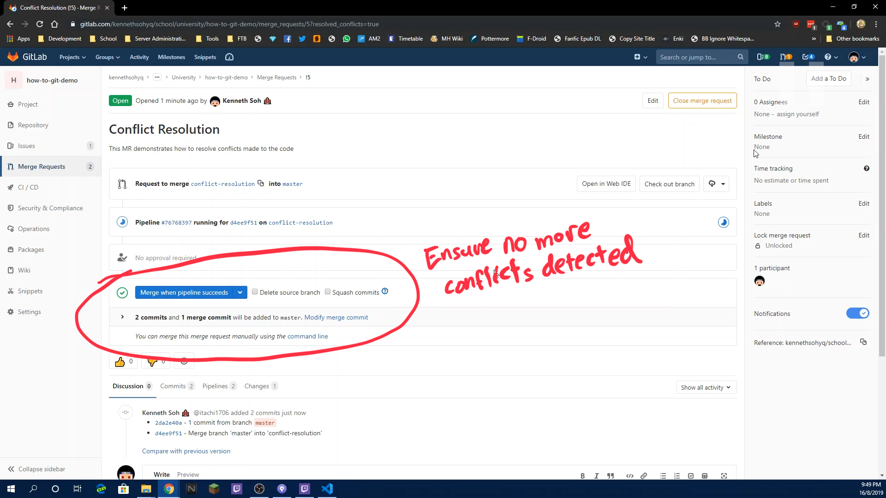

Resolve Conflicts in Code on the Web during a MR (WIP)
This file only relates to GitLab.
The following guide shows you how to resolve conflicts if it happens (either through rebasing or pulling code). Console usage is required
If a merge conflict occurs (either through pull or rebase or whatever), an error will pop up somewhere along the lines shown in this console window

When then happen, check the files that have conflicted (you can see it in the console or in the File Status tab on SourceTree where they will display them as ! files)
Use your IDE to head over to that file (or open in any text editor)
Identify the conflicted code and resolve them normally
Before Conflict Resolution
 After Conflict Resolution

Head back to SourceTree and select the resolved conflicted files in Unstaged Files and stage them accordingly

Tell git to continue the operation you are doing
If you are doing a pull, just go ahead and click Commit in File Status (see Commit Code)
If you are doing a rebase, go back to the console and execute
git rebase --continue
(See pic below)

Demo Video The following is a video on how this is being done. Read the how-to guide before watching the video for actual steps to do it
Console Commands Used
git rebase "branch" # Rebase the branch
git rebase --continue # Continues after resolving conflict